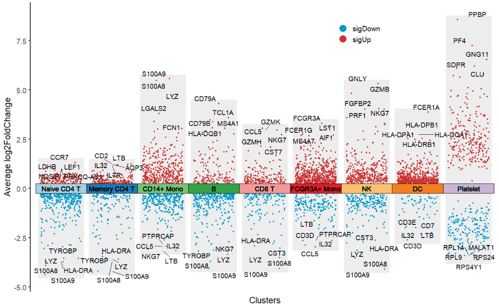
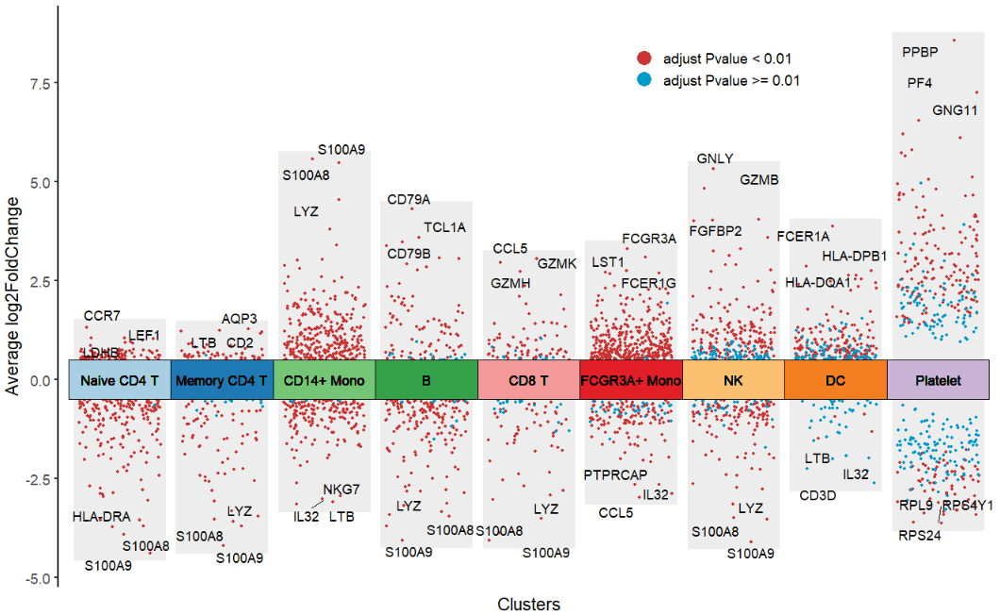
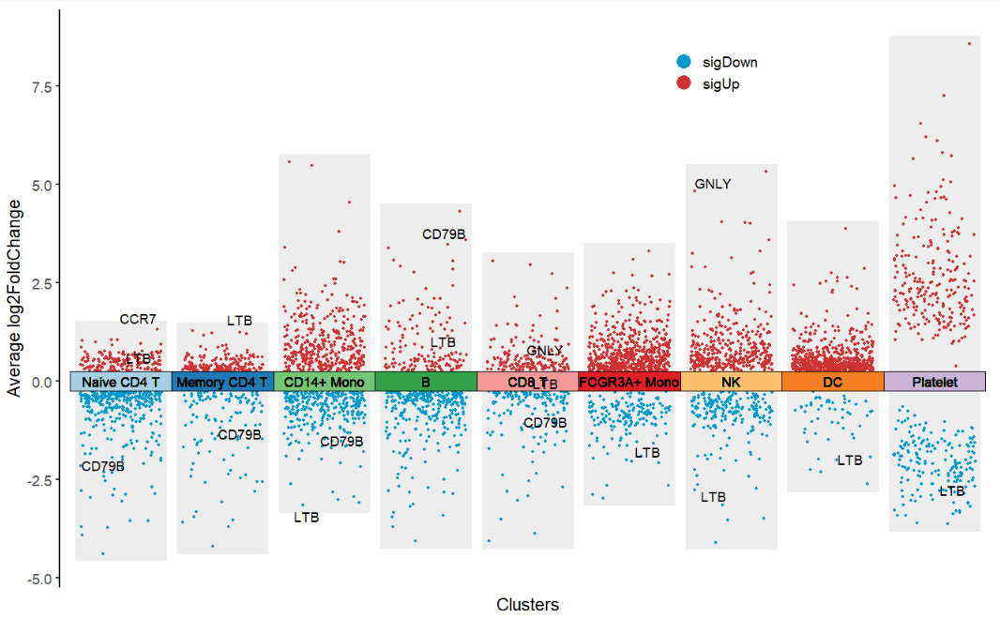
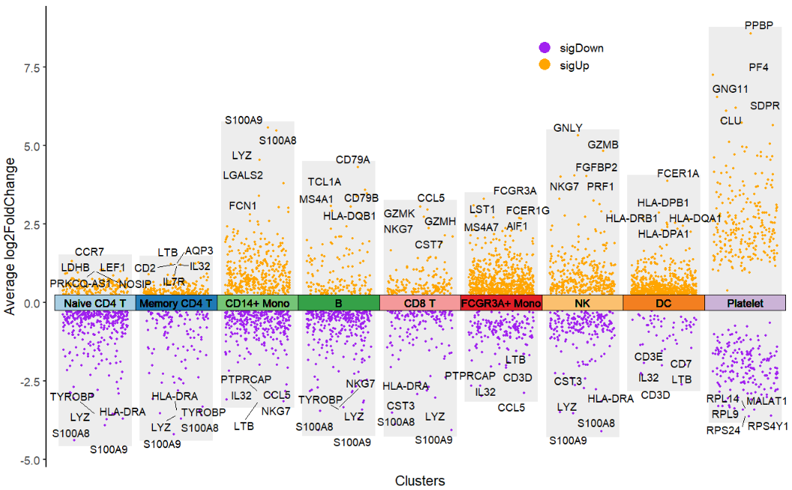
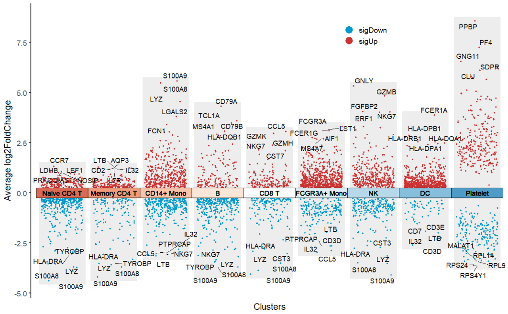
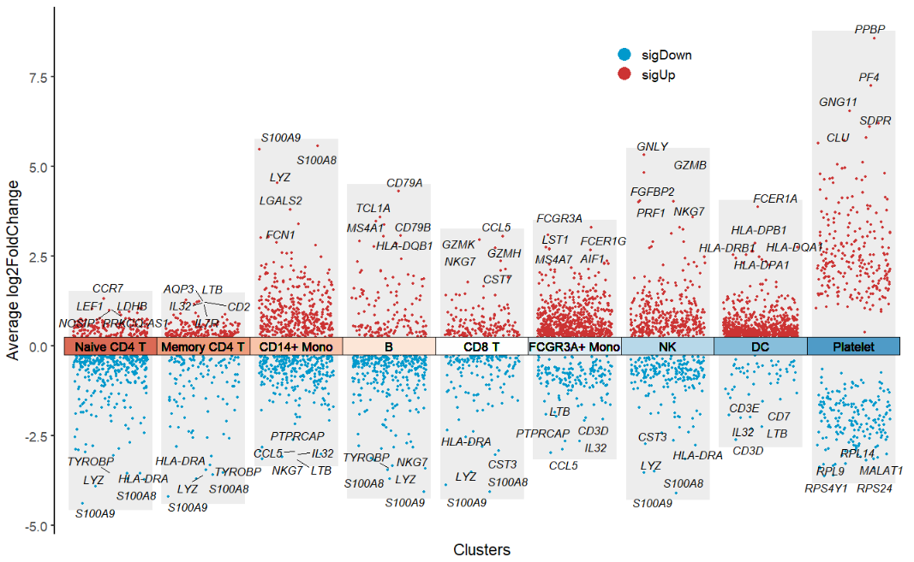
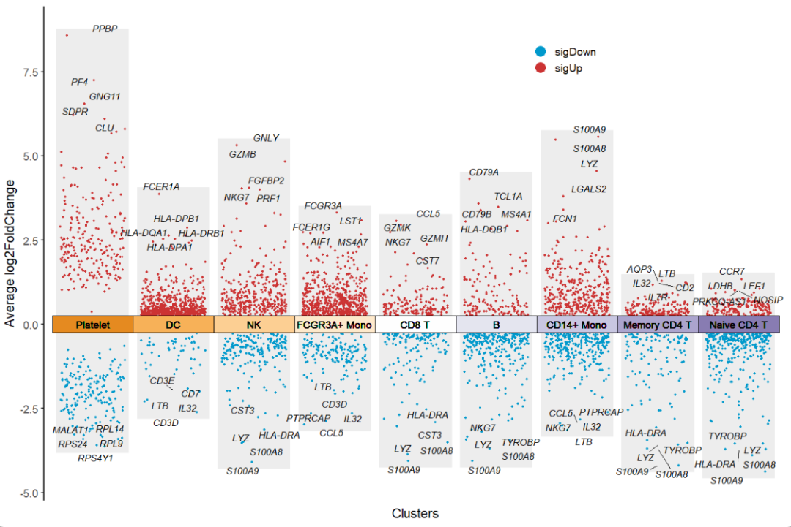
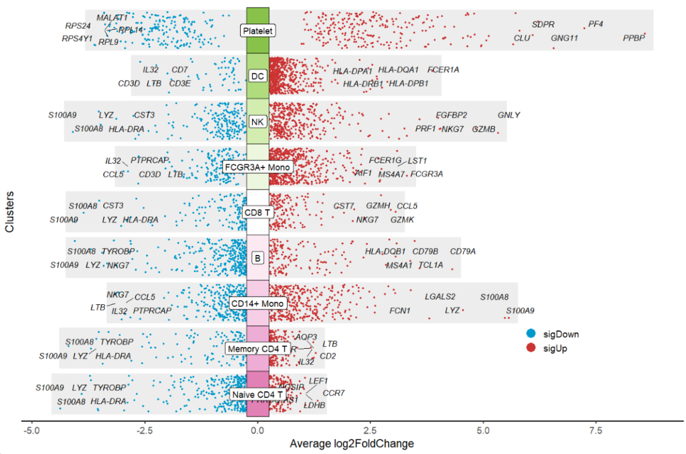
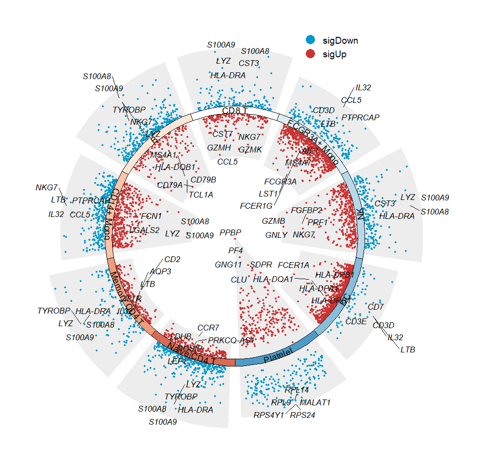
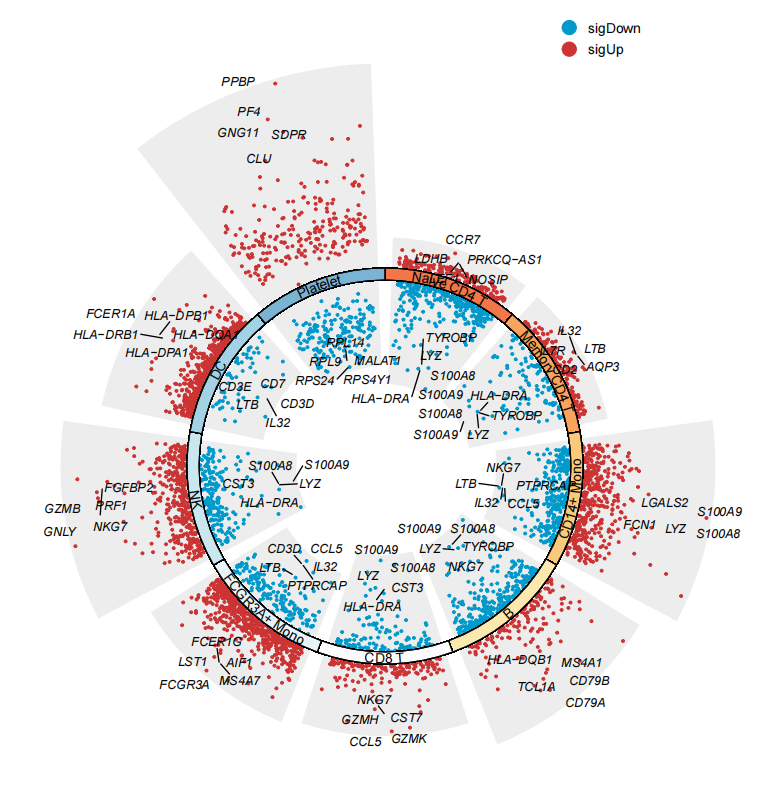

8 jjVolcano
jjVolcano function can be used to visualize marker genes in multiple clusters.
8.1 Basic examples
Load test data:
library(scRNAtoolVis)
# test
data('pbmc.markers')
# check
head(pbmc.markers,3)
# p_val avg_log2FC pct.1 pct.2 p_val_adj cluster gene
# RPS12 2.008629e-140 0.7256738 1.000 0.991 2.754633e-136 Naive CD4 T RPS12
# RPS27 2.624075e-140 0.7242847 0.999 0.992 3.598656e-136 Naive CD4 T RPS27
# RPS6 1.280169e-138 0.6742630 1.000 0.995 1.755623e-134 Naive CD4 T RPS6plot:
# plot
jjVolcano(diffData = pbmc.markers)
Ajustlog2FC.cutoff,col.typeandtopGeneN:
# change aes color type
jjVolcano(diffData = pbmc.markers,
log2FC.cutoff = 0.5,
col.type = "adjustP",
topGeneN = 3)
Supply with own genes:
# supply own genes
mygene <- c('LTB','CD79B','CCR7','GNLY')
jjVolcano(diffData = pbmc.markers,
myMarkers = mygene)
Change point color:

Change rect fill color:
# change cluster rect color
jjVolcano(diffData = pbmc.markers,
tile.col = corrplot::COL2('RdBu', 15)[4:12])
Other about gene text aruments can be passed by geom_text_repel:
# cluster label arguments passed to geom_text_repel
jjVolcano(diffData = pbmc.markers,
tile.col = corrplot::COL2('RdBu', 15)[4:12],
size = 3.5,
fontface = 'italic')
Ajust cluster orders by cluster.order:
# ajust cluster orders
jjVolcano(diffData = pbmc.markers,
tile.col = corrplot::COL2('PuOr', 15)[4:12],
size = 3.5,
fontface = 'italic',
cluster.order = rev(unique(pbmc.markers$cluster)))
8.2 Layout
flip = T to rotate the plot:
# flip the plot
jjVolcano(diffData = pbmc.markers,
tile.col = corrplot::COL2('PiYG', 15)[4:12],
size = 3.5,
fontface = 'italic',
legend.position = c(0.8,0.2),
flip = T)
polar = T to draw a polar plot:
# make a polar plot
jjVolcano(diffData = pbmc.markers,
tile.col = corrplot::COL2('RdBu', 15)[4:12],
size = 3.5,
fontface = 'italic',
polar = T)
Expand the limits:
# expand limits
jjVolcano(diffData = pbmc.markers,
tile.col = corrplot::COL2('RdYlBu', 15)[4:12],
size = 3.5,
fontface = 'italic',
polar = T) +
ylim(-8,10)